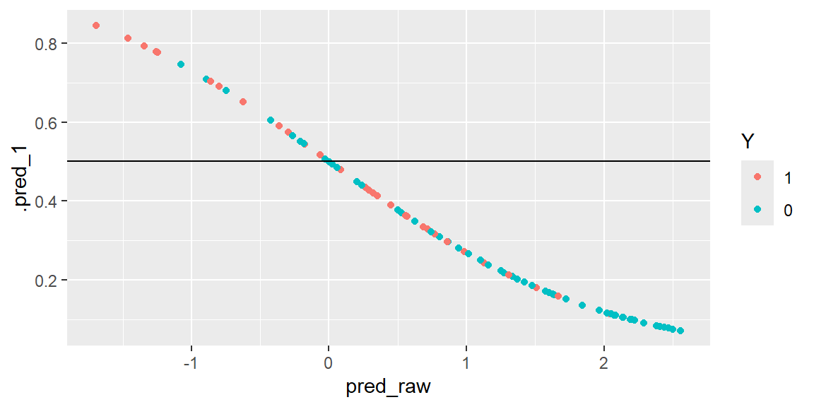

“In God we trust, all others bring data.” - W Edwards Deming
24.1 Multiple Logistic Regression
In the last chapter, we introduced logistic regression using a simple (one predictor) model. The simple logistic regression model is easily extended to more than one predictor variable.
In fact, several predictor variables are usually required with logistic regression to obtain adequate description and useful predictions.
In matrix notation, the logistic response function becomes \[
E\{Y\} = \frac{\exp{\left(\textbf{X}^\prime\boldsymbol{\beta}\right)}}{1+\exp{\left(\textbf{X}^\prime\boldsymbol{\beta}\right)}}
\]
Like the simple logistic response function, the multiple logistic-response function is monotonic and sigmoidal in shape with respect to \(\textbf{X}^\prime\boldsymbol{\beta}\) and is almost linear when \(\pi\) is between .2 and .8.
The \(X\) variables may be different predictor variables, or some may represent curvature and/or interaction effects.
Also, the predictor variables may be quantitative, or they may be qualitative and represented by indicator variables.
This flexibility makes the multiple logistic regression model very useful.
24.2 Example Using Tidymodels
In a health study to investigate an epidemic outbreak of a disease that is spread by mosquitoes, individuals were randomly sampled within two sectors in a city to determine if the person had recently contracted the disease under study.
This was ascertained by the interviewer, who asked pertinent questions to assess whether certain specific symptoms associated with the disease were present during the specified period.
The response variable \(y\) was coded 1 if this disease was determined to have been present, and 0 if not.
Three predictor variables were included in the study, representing known or potential risk factors.
They are age, socioeconomic status of household, and sector within city.
Age (\(x_1\)) is a quantitative variable. Socioeconomic status is a categorical variable with three levels. It is represented by two indicator variables (\(x_2\) and \(x_3\)), as follows: \[
\begin{align*}
Class &\quad x_2 & x_3\\
Upper & \quad 0 & 0\\
Middle & \quad 1 & 0\\
Lower & \quad 0 & 1
\end{align*}
\]
City sector is also a categorical variable. Since there were only two sectors in the study, one indicator variable (\(x_4\)) was used, defined so that \(x_4 = 0\) for sector 1 and \(x_4 = 1\) for sector 2.
We will first convert the response variable to a factor and then look at the scatterplot matrix.
The value of the linear model can be obtained from the predict function. This value is what is obtained when the values of the predictor variables are substituted into the linear part of the model \[
\hat{\beta}_0+\hat{\beta}_1 x_1 + \hat{\beta}_2 x_2 + \hat{\beta}_3 x_3 + \hat{\beta}_4 x_4
\]
These raw values can be used visualize the predicted probabilities and the actual values of the response variable.
results = dat |>select(Y) |>bind_cols(pred_raw, pred_prob, pred_class)results |>ggplot(aes(x = pred_raw, y = .pred_1, col = Y))+geom_point()+geom_hline(yintercept =0.5)

A line at 0.5 represents the value for which we would classify the predicted probabilities. Values above 0.5 would be classified as a 1 (disease present) and values below 0.5 would be classified as a 0 (disease not present). The color of the dots are the actual values of the response variable. If the model was able to predict the response variable perfectly, then all of the values above 0.5 would be blue and all the values below 0.5 would be red. Since there are some red above the line and some blue below the line, then we have missclassification.
24.4 Confusion Matrix
To get a better idea of which is being missclassified, we can look at the confusion matrix.
conf_mat(results, truth = Y,estimate = .pred_class)
Truth
Prediction 1 0
1 12 9
0 19 58
We see from the confusion matrix that there are 9 observations that are predicted to have the disease but really did not (false positives). There were also 19 observations that were predicted to not have the disease but really did (false negatives).
From this confusion matrix, we can calculate the probability of predicting a 1 given the observation is a 1 (a true positive). This is known as specificity or True Positive Rate (TPR).
Likewise, we can calculate the probability of prediction a 0 given the observation is a 0 (a true negative). This is known as specificity or True Negative Rate (TNR).
sens(results, truth = Y,estimate = .pred_class)
# A tibble: 1 × 3
.metric .estimator .estimate
<chr> <chr> <dbl>
1 sens binary 0.387
A Receiver Operating Characteristic (ROC) curve is a graphical representation of the diagnostic ability of a binary classifier. Logistic regression is such a classifier.
The ROC curve plots the TPR versus the False Positive Rate (1-specificity).
The ROC curve is created by calculating TPR and FPR at various threshold values, ranging from 0 to 1.
The diagonal line represents a random classifier (e.g., flipping a coin). A good classifier has a curve that bows significantly above this diagonal.
The upper-left corner of the plot (TPR = 1, FPR = 0) represents a perfect classifier, achieving both 100% sensitivity and 100% specificity.
Area Under the Curve (AUC)
The Area Under the ROC Curve (AUC) provides a single number summary of the model’s performance:
AUC ranges from 0 to 1.
AUC = 1: Perfect model.
AUC = 0.5: Random guessing.
AUC < 0.5: Worse than random guessing (usually indicates a problem with the model).
An ROC curve helps assess how well logistic regression separates the two classes, independent of the specific threshold chosen. It provides insights into the trade-offs between sensitivity and specificity as you adjust the threshold. Comparing ROC curves or AUC values of different models can guide model selection and threshold optimization.
To find the ROC curve:
results |>roc_curve(truth = Y, .pred_1) |>autoplot()